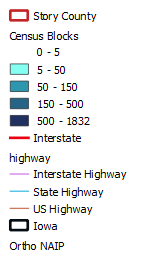
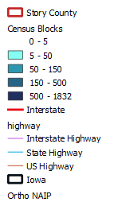
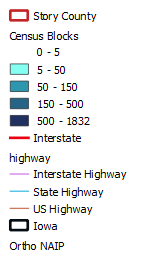

Does this map represent the actual scenario?
If so, what measures can be introduced to encourage people to live in country areas as well?
This map portrays the population in 5 categories in different census blocks in Story County in the State of Iowa.
The darker colors indicating more populated areas, which is evidently the urban areas in the county.
The classification was done using the "Quantile" method and "equal count" classification techinique.
QGIS 3.4.4 was used in preparing the map.

Does this map represent the actual scenario?
If so, what measures can be introduced to encourage people to live in country areas as well?